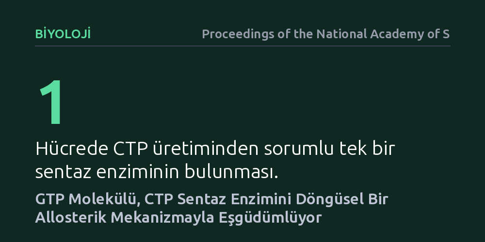

BIYOLOJI · Proceedings of the National Academy of Sciences · 2026-10-25
Hücrelerin RNA üretiminde vazgeçilmez olan CTP sentaz enziminin verimli çalışma mekanizması araştırıldı. İleri kriyoelektron mikroskobu gözlemleri, GTP molekülünün döngüsel bir allosterik mekanizmayla enzimi eşgüdümlü şekilde çalıştırdığını ortaya çıkardı.
Hücrelerin genetik yapı taşlarını üretirken enzimleri durağan değil, moleküllerin girip çıktığı dinamik bir döngüyle yönettiğini göstererek metabolik kontrol anlayışımızı geliştiriyor.

Bütün canlı hücreler hayatta kalabilmek, genetik bilgilerini aktarabilmek ve çoğalabilmek için sürekli olarak RNA moleküllerine ihtiyaç duyar. RNA'nın yapısına giren dört temel nükleotidden biri olan sitidin trifosfat (CTP), hücre içi biyolojik süreçlerin aksamaması için zorunlu bir yapı taşıdır. Ne var ki hücrelerin bu yaşamsal molekülü sıfırdan üretebilmek için güvendiği tek bir hücresel makine vardır: CTP sentaz enzimi.
CTP sentazın hücrede tek bir sentez yolu temsil etmesi, onu metabolizmanın en sıkı denetlenen kontrol noktalarından biri haline getirir. Enzim gereğinden az çalıştığında hücre genetik yapı taşlarından mahrum kalır; gereğinden fazla çalıştığında ise nükleotid dengesizliği hücresel strese yol açar. Bilim insanları uzun zamandır bu enzimin çalışma hızının bir diğer nükleotid olan guanozin trifosfat (GTP) tarafından artırıldığını bilse de, bu iki molekül arasındaki mekanik işbirliğinin atomik düzeyde nasıl koordine edildiği tam olarak aydınlatılamamıştı.
Hücresel enzimlerin işleyişini anlamak, çalışan karmaşık bir motorun iç parçalarını anlık olarak fotoğraflamaya benzer. Araştırmacılar bu gizemi çözebilmek için yapısal biyolojide devrim niteliğinde veriler sunan ileri kriyoelektron mikroskopisi (kriyo-EM) tekniğine başvurdu. Bu yöntemde enzimler sıvı azot sıcaklığında milisaniyeler içinde dondurularak doğal biçimlerinde sabitlenir ve elektron demetleriyle atomik çözünürlüğe yakın üç boyutlu görüntüleri elde edilir.
Araştırma ekibi, CTP sentaz enzimini katalitik tepkime sırasındaki farklı evrelerde yakalayarak dondurdu. Elde edilen on binlerce parçacık görüntüsünün yüksek hesaplama gücüyle modellenmesi sonucunda, enzimin işlev görürken geçirdiği yapısal değişimler ve düzenleyici moleküllerle kurduğu anlık temaslar adım adım haritalandı.
Elde edilen yüksek çözünürlüklü yapılar, GTP molekülünün CTP sentazı klasik bir sabit anahtar gibi açık tutmadığını ortaya koydu. Sanılanın aksine GTP enzime kalıcı biçimde yapışmıyor; reaksiyon döngüsünün belirli bir aşamasında enzimin özel allosterik cebine bağlanıyor, gerekli biçimsel değişimi tetikledikten sonra enzimden ayrılarak yerini yeni bir döngüye bırakıyor.
Bu döngüsel efektör mekanizması sayesinde enzim, glutamin molekülünden amonyak koparma basamağını reaksiyonun diğer adımlarıyla kusursuz bir zamanlamayla eşleştiriyor. GTP'nin ritmik biçimde girip çıkması, enzimin farklı aktif bölgeleri arasında bir dişli çark eşgüdümü kurarak ara ürünlerin ve hücresel enerjinin boşa gitmesini önlüyor. Böylece hücre, CTP üretimini yüksek bir verimlilikle gerçekleştirebiliyor.
CTP sentazın çalışma mekanizmasının bu ayrıntıda aydınlatılması, yalnızca temel biyoloji açısından değil, farmakolojik ve tıbbi uygulamalar açısından da önemli ufuklar açıyor. Hızlı bölünen kanser hücreleri ile tüberküloz gibi dirençli bakteriyel patojenler, hayatta kalabilmek için CTP sentaz enziminin yüksek aktivitesine bağımlıdır.
Enzimin GTP ile etkileştiği allosterik cebin ve efektör döngüsünün ayrıntılı haritası, bu eşgüdümü engelleyecek hedefe yönelik yeni nesil moleküllerin tasarlanmasına olanak tanıyabilir. Hücresel enzimleri durağan yapılar yerine sürekli dinamik bir ritimle çalışan moleküler makineler olarak kavramak, geleceğin antimikrobiyal stratejileri için sağlam bir biyolojik temel oluşturuyor.